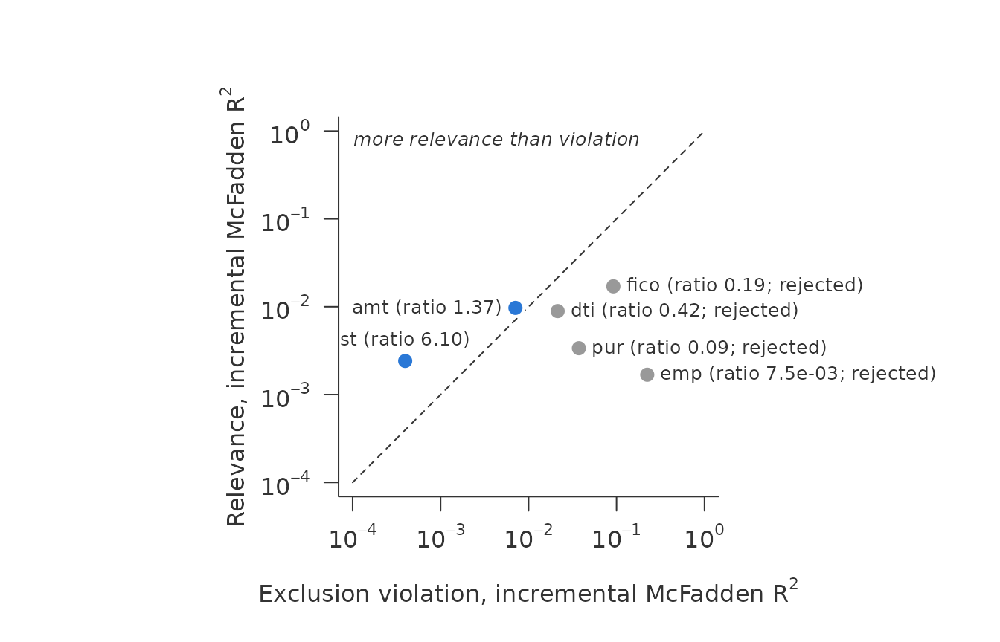
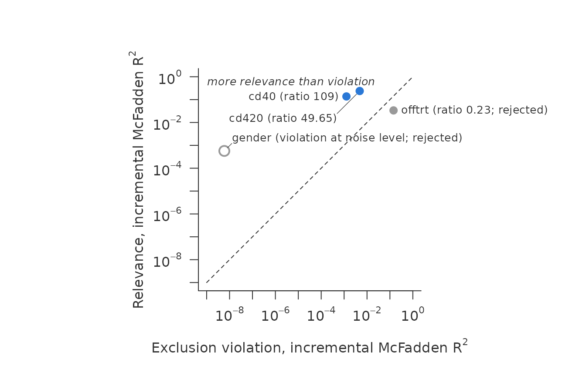
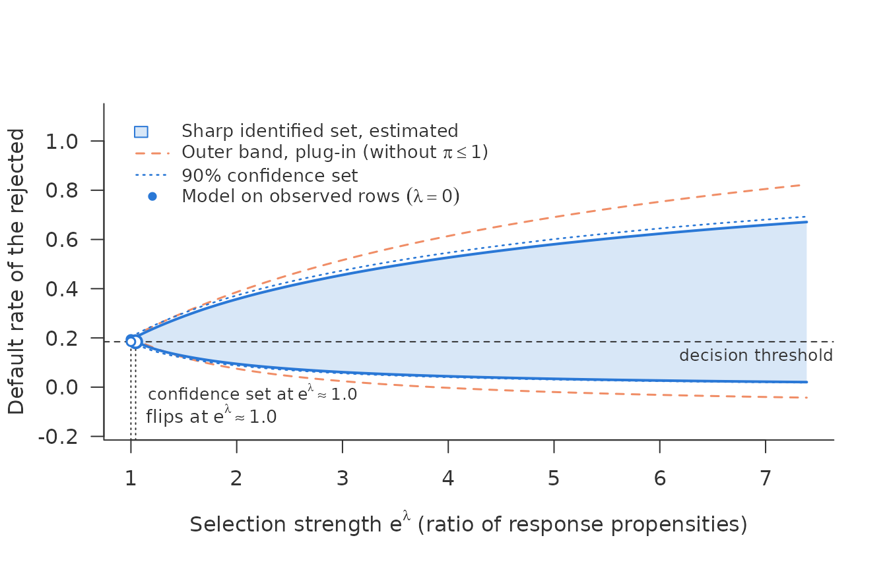
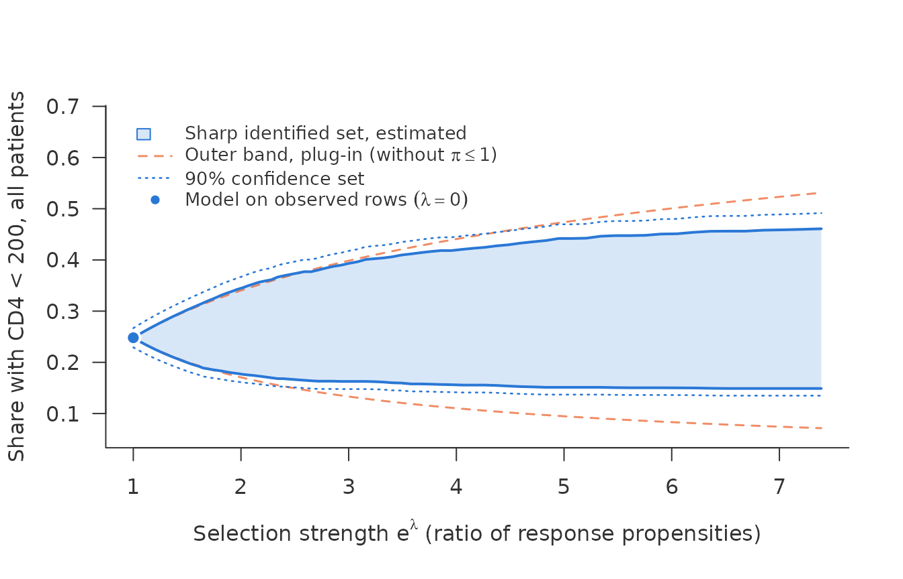
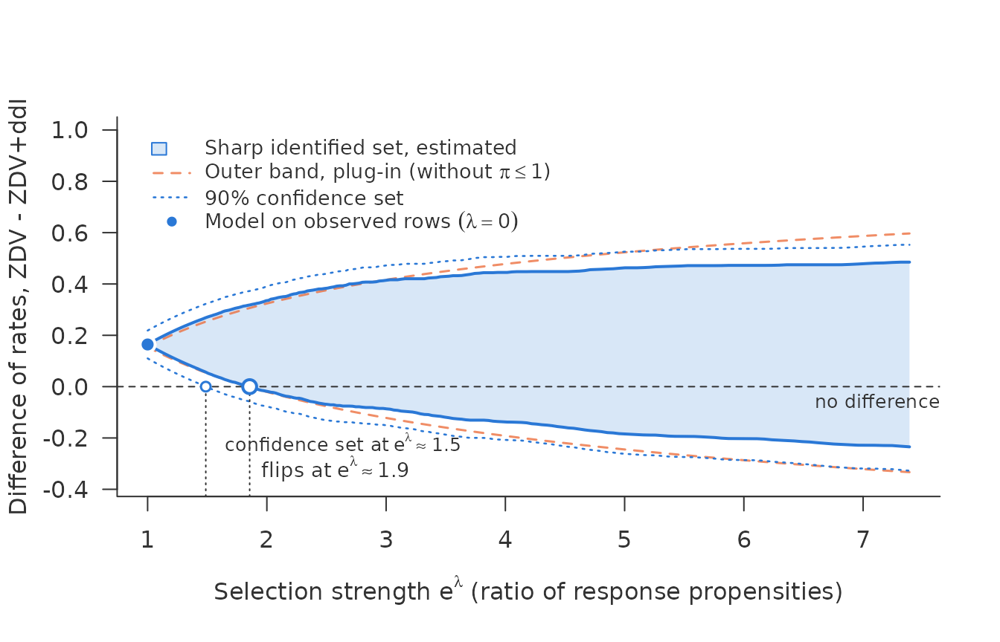
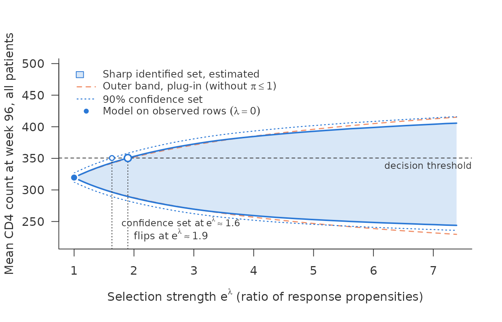
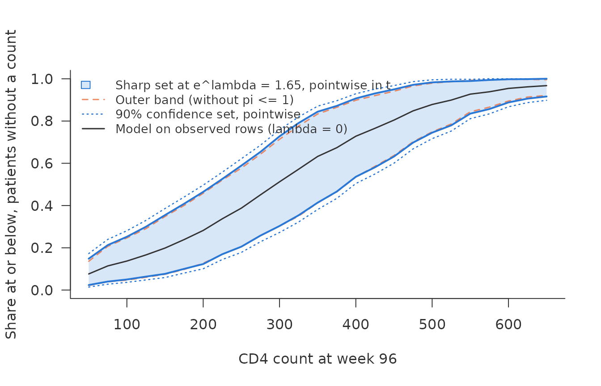
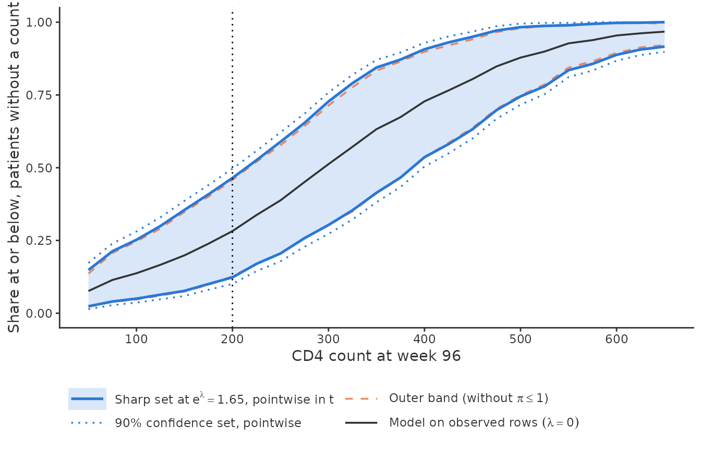

Two applications: reject inference and trial dropout
Source:vignettes/applications.Rmd
applications.RmdThe same question comes up wherever an outcome is missing for a reason that may involve the outcome itself. This vignette takes two settings that differ in almost every respect:
- Reject inference. Lending Club, 2014. A lender never learns whether a rejected applicant would have repaid, and it rejected them because it expected them not to.
- Dropout in a clinical trial. The AIDS Clinical Trials Group Study 175 (Hammer et al., 1996). The CD4 count at week 96 is missing for patients who left the trial, plausibly those who did worse. In this literature the shadow variable is usually called a nonresponse instrument (Scharfstein, Rotnitzky and Robins, 1999; Zhao, Wang and Shao, 2021; Beppu and Morikawa, 2024; Chen and Shao, 2025).
Each step below is run on both, side by side.
vignette("nonignorable") explains the tools on simulated
data.
The data
Lending Club. The data have 1,839,397 rows, and cross-fitting the models takes 36 minutes. The Lending Club part therefore does not compute. It reads small result objects shipped with the package. How to recompute them is shown at the end.
Lending Club published both its granted loans and the applications it rejected. The two files share a few characteristics: FICO score, debt-to-income ratio (DTI), amount, employment length, state and purpose. For 2014 there are 223,102 granted loans with a known outcome and 1,616,295 rejections. \(Y = 1\) is a default, and \(R = 1\) means the loan was granted.
ACTG 175 ships with the package speff2trial and is small enough to compute here.
data(ACTG175, package = "speff2trial")
d <- ACTG175
d$arms <- factor(d$arms, 0:3, c("ZDV", "ZDV+ddI", "ZDV+Zal", "ddI"))
d$y <- as.integer(d$cd496 < 200)
table(arm = d$arms, observed = d$r)
#> observed
#> arm 0 1
#> ZDV 211 321
#> ZDV+ddI 189 333
#> ZDV+Zal 187 337
#> ddI 210 3512139 patients with HIV were randomised to four antiretroviral regimens. The CD4 count at week 96 is missing for 797 patients (37%). \(Y = 1\) is a count below 200, the clinical threshold for AIDS. One caveat: for 39% of the patients without a week-96 count, follow-up ended before week 96. Some of them died, and for them the count is not missing but undefined. The analysis follows the literature and treats all of them as missing.
The screen
Lending Club: the coding matters
shadow_screen() takes each of the six characteristics in
turn as candidate, with the other five as covariates. With numeric
characteristics entered linearly:
lc$screen_linear
#> <shadow_screen> relevance vs exclusion violation, incremental McFadden R^2
#> pass: relevance chi2/df >= 10 and ratio > 1
#> candidate relevance exclusion ratio chi2/df verdict
#> fico 0.0171 0.018 0.951 3645 reject: exclusion
#> dti 0.00931 0.00219 4.25 1987 pass
#> amt 0.00708 0.00435 1.63 1511 pass
#> emp 0.00155 0.382 0.00405 30 reject: exclusion
#> st 0.00241 0.000483 5 11.2 pass
#> pur 0.0031 0.062 0.05 60.2 reject: exclusionPassing: DTI, amount and state. But Lending Club cut hard. No application with a FICO score below 662 or a DTI of 40 or more was granted. A linear term cannot represent such a step, so it understates how strongly FICO and DTI drive the decision. Coded as ten classes of equal mass, the picture changes:
lc$screen_deciles
#> <shadow_screen> relevance vs exclusion violation, incremental McFadden R^2
#> pass: relevance chi2/df >= 10 and ratio > 1
#> candidate relevance exclusion ratio chi2/df verdict
#> fico 0.017 0.0904 0.188 402 reject: exclusion
#> dti 0.00915 0.0215 0.426 217 reject: exclusion
#> amt 0.00909 0.0116 0.786 216 reject: exclusion
#> emp 0.00166 0.223 0.00745 32.3 reject: exclusion
#> st 0.0024 0.000431 5.57 11.1 pass
#> pur 0.00335 0.0381 0.0879 64.9 reject: exclusionNow only state passes. Amount fails, with a ratio of 0.79. Amount has
a further problem. Loan amounts are heaped on round numbers, and many
rows sit exactly on a decile boundary, so classes cut at quantiles split
those atoms arbitrarily. numeric = "classes" cuts only
between distinct values:
lc$screen_classes
#> <shadow_screen> relevance vs exclusion violation, incremental McFadden R^2
#> pass: relevance chi2/df >= 10 and ratio > 1
#> candidate relevance exclusion ratio chi2/df verdict
#> fico 0.0171 0.092 0.186 455 reject: exclusion
#> dti 0.00892 0.0214 0.417 211 reject: exclusion
#> amt 0.0097 0.00709 1.37 259 pass
#> emp 0.00168 0.223 0.00753 32.6 reject: exclusion
#> st 0.00242 0.000396 6.1 11.2 pass
#> pur 0.00337 0.0373 0.0903 65.4 reject: exclusion
plot(lc$screen_classes)
Passing now: amount and state. Amount has a ratio of 1.37, DTI of 0.42. The lesson is not that amount is a good shadow variable. It is that the answer depends on the coding, and that a threshold rule in the selection calls for classes.
ACTG 175: a clear shadow variable and a clear violation
The covariates are baseline characteristics and the CD8 count at
baseline. The candidates are the CD4 counts at baseline
(cd40) and at week 20 (cd420), sex, and
offtrt, an indicator that the patient stopped the assigned
treatment before week 96.
Here the numeric characteristics enter linearly. Dropout follows no threshold rule, and the screen finds no trace of one. Classes would also cost more than the data carry: with 309 counts below 200 among the observed, ten classes for each numeric characteristic leave fewer than ten of them per parameter, and the screen warns about exactly that. Flexible coding pays when the selection uses a threshold and the sample carries the degrees of freedom.
base <- c("age", "wtkg", "hemo", "homo", "drugs", "karnof", "race",
"symptom", "str2", "preanti", "arms", "cd80")
sc <- shadow_screen(d, outcome = "y", response = "r", covariates = base,
candidates = c("cd40", "cd420", "gender", "offtrt"))
sc
#> <shadow_screen> relevance vs exclusion violation, incremental McFadden R^2
#> pass: relevance chi2/df >= 10 and ratio > 1
#> numeric as linear terms: age, wtkg, karnof, preanti, cd80, cd40, cd420
#> candidate relevance exclusion ratio chi2/df verdict
#> cd40 0.138 0.00126 109 199 pass
#> cd420 0.238 0.00479 49.6 345 pass
#> gender 0.000569 5.9e-09 96463 0.825 reject: weak
#> offtrt 0.0337 0.144 0.235 48.8 reject: exclusion
#> violation at noise level (exclusion chi2/df below 1; the ratio
#> divides by noise): gender
plot(sc)
- The earlier CD4 counts pass clearly. The count at week 20 predicts the count at week 96 far better than it predicts dropout, with a ratio of 49.65.
- Sex is too weak. Its relevance has a \(\chi^2/\mathrm{df}\) of 0.82. It has been used as an instrument in this literature, but on these data it carries almost no information about the outcome. Its point in the plot is hollow: its exclusion \(\chi^2/\mathrm{df}\) is 1.7e-05, below the noise floor of 1, so its ratio divides by noise and is not reported.
- Stopping treatment violates the exclusion restriction. It is strongly relevant, but its ratio is 0.23: it predicts dropout more strongly still. It plays the part a bureau score plays in reject inference.
The scan
Lending Club: is the rejected portfolio riskier?
A lender asks whether its rejected applicants really are riskier than
the ones it granted: whether their own default rate, \(E(Y \mid R = 0)\), exceeds that of the
granted loans. With target = "unobserved" the scan bounds
that rate. It is not the average of \(\eta(x)\) at the rejected applicants’
characteristics: under selection on the outcome the rejected at a given
\(x\) differ from all applicants at
that \(x\). The decision threshold is
the default rate of the granted loans, 0.184. It is itself an estimate
and is treated as fixed here. Rows with a FICO below 662 or a DTI of 40
or more were never granted. There \(r(x) =
0\), the data say nothing, and these rows leave the analysis.
That leaves the overlap region, FICO >= 662 and DTI < 40, with
223,102 granted and 438,588 rejected applications. Both models are
logistic with natural splines for the numeric characteristics,
cross-fitted with 5 folds.
lc$scan_ci
#> <sharp_scan_ci> sharp set for a rate, debiased, with 90% confidence set
#> rows: 661690 target: unobserved (438588 rows)
#> r-hat < 0.01: 64159 target rows, 886 observed rows; smallest r-hat observed 0.00031
#> lambda = 0: 0.194 [0.183, 0.204]
#> lambda = 2 (propensity ratio 7.39): set [0.0205, 0.671], confidence set [0.0184, 0.693]
#> threshold 0.184 reached by
#> estimated set: lambda = 0.0436 (propensity ratio 1.04)
#> confidence set: lambda = 0 (propensity ratio 1)
#> outer band (plug-in): lambda = 0.0799 (propensity ratio 1.08)
#> cap pi <= 1 at lambda = 2 binds in 46% of the rows entering the set
#> for the lower bound, 34% for the upper
plot(lc$scan_ci, ylab = "Default rate of the rejected")
Under MAR the rejected would default at a rate of 0.194. That is above the threshold, but not by much. The estimated set reaches the threshold at a propensity ratio of 1.04. That end of the set is reached when applicants who would default were more likely to be granted than otherwise identical applicants who would repay, as can happen when the score misses what a loan officer sees. They need to be only about 4% more likely.
The confidence set is wider still. At \(\lambda = 0\) it is [0.183, 0.204], which already contains the threshold. Even under MAR the data cannot rule out that the rejected are as good as the granted. This is with 661,690 rows. Three lines of the output explain why.
- The rows with small \(\hat r\). 64,159 of the rejected rows have \(\hat r < 0.01\). What the data say about them rests on the 886 granted rows of the same kind, each weighted by \(1/\hat r\).
-
The standard error. The default
se_type = "max"takes the larger of two standard errors at each endpoint. Here the empirical one is larger, by a factor of 1.41 at \(\lambda = 0\). The conditional one is computed from the fitted models and misses their misspecification. The empirical one sees it, but it can be unstable where \(\hat r\) is small. Taking the larger guards against both. - The plug-in. Without debiasing, the scan on the same cross-fitted inputs flips at 1.09.
Removing the rejected rows with \(\hat r < 0.01\) changes the question to the better-covered part of the rejected portfolio. For it the estimate flips at 1.09 and the confidence set at 1.06:
lc$scan_ci_trim
#> <sharp_scan_ci> sharp set for a rate, debiased, with 90% confidence set
#> rows: 661690 target: unobserved (374429 rows)
#> trimmed: 64159 rows with r-hat < 0.01, out of the target
#> r-hat < 0.01: 0 target rows, 886 observed rows; smallest r-hat observed 0.00031
#> lambda = 0: 0.204 [0.199, 0.209]
#> lambda = 2 (propensity ratio 7.39): set [0.0199, 0.709], confidence set [0.0188, 0.719]
#> threshold 0.184 reached by
#> estimated set: lambda = 0.0859 (propensity ratio 1.09)
#> confidence set: lambda = 0.0626 (propensity ratio 1.06)
#> outer band (plug-in): lambda = 0.0854 (propensity ratio 1.09)
#> cap pi <= 1 at lambda = 2 binds in 51% of the rows entering the set
#> for the lower bound, 37% for the upperACTG 175: every patient had a fair chance of being observed
Both models are logistic on the baseline covariates and the two earlier CD4 counts, cross-fitted with five folds. The rate of interest is the share with CD4 below 200 among all patients.
rhs <- paste(c(base, "cd40", "cd420"), collapse = " + ")
fe <- as.formula(paste("y ~", rhs))
fr <- as.formula(paste("r ~", rhs))
inp <- crossfit_inputs(d, "r",
fit_eta = function(train, new)
predict(glm(fe, binomial, data = train[train$r == 1, ]), new, type = "response"),
fit_r = function(train, new)
predict(glm(fr, binomial, data = train), new, type = "response"),
folds = 5, seed = 175)
yb <- ifelse(d$r == 1, d$y, NA)
summary(inp$r)
#> Min. 1st Qu. Median Mean 3rd Qu. Max.
#> 0.2949 0.5693 0.6361 0.6263 0.6891 0.8697
all <- sharp_scan_ci(inp$eta_obs, inp$r, d$r, yb, target = "all")
all
#> <sharp_scan_ci> sharp set for a rate, debiased, with 90% confidence set
#> rows: 2139 target: all (2139 rows)
#> r-hat < 0.01: 0 target rows, 0 observed rows; smallest r-hat observed 0.33
#> lambda = 0: 0.248 [0.229, 0.267]
#> lambda = 2 (propensity ratio 7.39): set [0.149, 0.461], confidence set [0.135, 0.491]
#> cap pi <= 1 at lambda = 2 binds in 98% of the rows entering the set
#> for the lower bound, 61% for the upper
plot(all, ylab = "Share with CD4 < 200, all patients")
The estimated chance of a week-96 count ranges from 0.29 to 0.87. This is the opposite of Lending Club, and it has two consequences.
- The sharp set is much narrower than the outer band. At a propensity ratio of 7.39 the outer band spans [0.071, 0.531], the sharp set only [0.149, 0.461]. Because every patient had a good chance of being observed, the observed share bounds what the missing ones can be.
- Sampling error is moderate. No row has \(\hat r < 0.01\), and the confidence set is only a little wider than the estimate.
Comparing two groups
A trial is run for a comparison: is zidovudine alone worse than the
alternatives? sharp_scan_contrast() scans the difference in
the share with CD4 below 200 between two arms. It reports the selection
strength from which “no difference” can no longer be ruled out.
others <- c("ZDV+ddI", "ZDV+Zal", "ddI")
k <- lapply(others, function(b)
sharp_scan_contrast(inp$eta_obs, inp$r, d$r, yb,
target_a = d$arms == "ZDV", target_b = d$arms == b,
lambda = seq(0, 2, length.out = 201),
labels = c("ZDV", b)))
names(k) <- others
k[["ZDV+ddI"]]
#> <sharp_scan_contrast> difference of rates ZDV - ZDV+ddI, debiased, with 90% confidence set
#> rows: 2139 ZDV: 532 rows ZDV+ddI: 522 rows
#> r-hat < 0.01: 0 target rows, 0 observed rows; smallest r-hat observed 0.33
#> lambda = 0: 0.164 [0.11, 0.218]
#> lambda = 2 (propensity ratio 7.39): set [-0.235, 0.485], confidence set [-0.328, 0.553]
#> difference 0 reached by
#> estimated set: lambda = 0.618 (propensity ratio 1.86)
#> confidence set: lambda = 0.397 (propensity ratio 1.49)
#> outer band (plug-in): lambda = 0.612 (propensity ratio 1.84)
plot(k[["ZDV+ddI"]])
data.frame(
comparison = paste("ZDV -", others),
mar = sapply(k, function(x) x$point),
flip_estimate = sapply(k, function(x) exp(x$flip[["sharp"]])),
flip_confidence = sapply(k, function(x) exp(x$flip[["ci"]])),
row.names = NULL)
#> comparison mar flip_estimate flip_confidence
#> 1 ZDV - ZDV+ddI 0.1642672 1.855753 1.487798
#> 2 ZDV - ZDV+Zal 0.1299950 1.597500 1.308078
#> 3 ZDV - ddI 0.1134366 1.548126 1.253335Under MAR, the share below 200 is 16.4 percentage points higher on zidovudine alone than on zidovudine with didanosine. That finding holds as long as the propensity ratio stays below 1.86. With sampling error it holds up to 1.49.
The end of the set that reaches zero is the least favourable case for the finding. On zidovudine alone, patients who would end below 200 are that much more likely to have their count taken, which makes the arm look worse than it is. With didanosine added, they are that much less likely, which makes that arm look better. Selection would have to run in opposite directions in the two arms, and with that strength, to undo the comparison.
The same function compares any two groups chosen by \(X\), such as two regions of a lender. Each
group is a whole segment of rows, observed and unobserved alike. To
compare only the rejected applicants of two segments, set
among = "unobserved": it compares the default rates of the
rejected themselves, \(E(Y \mid R =
0)\) in each segment.
The mean of a continuous outcome
For the CD4 count itself rather than the share below 200,
sharp_scan_mean_ci() scans the mean count at week 96 over
all patients, with a debiased estimate and a confidence set. It needs,
for every patient, a grid of conditional quantiles of the count among
the observed, fitted out of fold. crossfit_quantiles()
takes the learner as a function. Here it is a location-scale model from
mgcv for the square root of the count, smooth in the two earlier CD4
counts, with the quantiles of its standardised residuals; squaring the
quantiles brings them back to counts. The response model is the logistic
regression from above.
loc <- as.formula(paste("sqrt(cd496) ~",
paste(c(base, "s(cd40)", "s(cd420)"), collapse = " + ")))
fit_q <- function(train, new, tau) {
m <- mgcv::gam(list(loc, ~ s(cd420)), family = mgcv::gaulss(), data = train)
p_tr <- predict(m, train, type = "response")
p_new <- predict(m, new, type = "response")
e <- (sqrt(train$cd496) - p_tr[, 1]) * p_tr[, 2] # standardised residuals
pmax(outer(p_new[, 1], rep(1, length(tau))) +
outer(1 / p_new[, 2], quantile(e, tau, names = FALSE)), 0)^2
}
cq <- crossfit_quantiles(d, "r", fit_q,
fit_r = function(train, new)
predict(glm(fr, binomial, data = train), new, type = "response"),
K = 200, seed = 175)
baseline <- mean(d$cd40)
km <- sharp_scan_mean_ci(cq$q, cq$r, d$r, d$cd496, threshold = baseline)
km
#> <sharp_scan_mean_ci> sharp set for a mean, debiased, with 90% confidence set
#> rows: 2139 target: all (2139 rows)
#> r-hat < 0.01: 0 target rows, 0 observed rows; smallest r-hat observed 0.33
#> lambda = 0: 320 [312, 327]
#> lambda = 2 (propensity ratio 7.39): set [244, 406], confidence set [236, 416]
#> threshold 351 reached by
#> estimated set: lambda = 0.641 (propensity ratio 1.9)
#> confidence set: lambda = 0.49 (propensity ratio 1.63)
#> outer band (plug-in): lambda = 0.666 (propensity ratio 1.95)
#> cap pi <= 1 at lambda = 2 binds in 98% of the rows entering the set
#> for the lower bound, 96% for the upper
plot(km, ylab = "Mean CD4 count at week 96, all patients")
Under MAR the mean count at week 96 is 320, below the mean at
baseline of 351. The threshold is that baseline mean: has the count
fallen on average? The baseline mean is itself an estimate, with a
standard error of 2.6, which the confidence set does not include. The
answer survives selection up to a propensity ratio of 1.90 in the
estimate and 1.63 in the confidence set. Beyond that, a dropout that
hides the patients with high counts could carry the mean back to its
starting level. At a ratio of \(e^1\)
the set is [274, 368]. The plug-in, sharp_scan_mean() on
the same inputs, gives [275, 365]. It skips the correction terms, and
here it lies inside the debiased set, the direction in which the plug-in
typically errs.
Quantiles of the missing counts
A mean can be moved by a few extreme counts. For the patients who
left the trial, the median count they would have had at week 96 is often
the more telling number. sharp_scan_cdf() scans their
distribution function, \(P(Y \le t \mid R =
0)\), at each value of a grid, and quantile() turns
it into bounds for quantiles. It needs \(P(Y
\le t \mid R = 1, X)\) for every patient and every \(t\); crossfit_cdf() fits it as
one logistic regression of \(1(\text{count}
\le t)\) per \(t\), out of
fold.
fz <- as.formula(paste("z ~", rhs))
tg <- seq(50, 650, by = 25)
cf <- suppressWarnings(crossfit_cdf(d, "r", "cd496", tg,
fit_eta = function(train, new)
predict(glm(fz, binomial, data = train), new, type = "response"),
fit_r = function(train, new)
predict(glm(fr, binomial, data = train), new, type = "response"),
folds = 5, seed = 175))
kc <- sharp_scan_cdf(cf$eta_t, cf$r, d$r, d$cd496, t = tg, lambda = 0.5,
target = "unobserved")
plot(kc, xlab = "CD4 count at week 96",
ylab = "Share at or below, patients without a count")
qc <- quantile(kc, c(0.25, 0.5, 0.75))
qc
#> prob point lower upper
#> 1 0.25 181.4208 75 275
#> 2 0.50 295.0239 200 400
#> 3 0.75 414.6244 300 525Under MAR the patients without a count would have a median of about 295, against 321 among those with one: the model already places them lower, through their earlier counts. At a propensity ratio of 1.65 their median lies between 200 and 400, at \(e^1\) between 125 and 475. The quantile bounds come from the two estimated curves and are widened outwards to the grid of steps of 25; they carry no confidence statement.
Both the set and the dotted confidence set hold for each \(t\) separately. No single law of the missing counts need reach the upper curve at every \(t\), so the curves are not a band for the whole distribution.
With ggplot2 installed, autoplot() draws the same curves
as a ggplot object, to which scales, labels and themes can be added.
Here the clinical cut-off of 200 is marked:
library(ggplot2)
autoplot(kc, xlab = "CD4 count at week 96",
ylab = "Share at or below, patients without a count") +
geom_vline(xintercept = 200, linetype = "dotted") +
scale_x_continuous(breaks = seq(100, 600, by = 100))
The two side by side
| Lending Club 2014 | ACTG 175 | |
|---|---|---|
| Rows | 661,690 | 2,139 |
| Observed | 223,102 | 1,342 |
| Smallest r-hat, observed rows | 0.00031 | 0.33 |
| Rows of interest with r-hat < 0.01 | 64,159 | 0 |
| Finding | rejected riskier than granted | ZDV worse than ZDV+ddI |
| Distance from the threshold at lambda = 0 | 0.009 | 0.164 |
| Flip of the estimate | 1.04 | 1.86 |
| Flip of the confidence set | 1.00 | 1.49 |
Lending Club has about 310 times as many rows, yet its finding is the fragile one. Two things decide this, and neither is the number of rows.
- How far the finding is from the threshold. Under MAR the rejected lie 0.009 above the threshold. The arms differ by 0.164. A small margin is crossed by weak selection. This drives the flip of the estimate.
- How the selection treated the rows. A lender that rejects most applicants is bound to leave rows that the data barely reach. Their weights \(1/\hat r\) inflate the standard error, so on Lending Club the confidence set reaches the threshold already at MAR. A trial in which every patient had a fair chance of being measured does not have that problem.
Recomputing the Lending Club objects
The source is the Kaggle dataset “All Lending Club loan data”
(wordsforthewise/lending-club, CC0 1.0), files
accepted_2007_to_2018Q4.csv.gz and
rejected_2007_to_2018Q4.csv.gz. The rejected file is
restricted to 2014, and its Risk_Score column is used as
FICO. The code below outlines the computation. It is not run here.
library(splines)
# d: one row per 2014 application, granted (R = 1, Y known) or rejected
# (R = 0), with fico, dti, amt, emp, st, pur.
vars <- c("fico", "dti", "amt", "emp", "st", "pur")
screen <- do.call(rbind, lapply(vars, function(z)
as.data.frame(unclass(shadow_screen(d, "Y", "R", setdiff(vars, z), z,
numeric = "classes")))))
ov <- d[d$fico >= 662 & d$dti < 40, ]
f <- ~ ns(fico, 4) + ns(dti, 4) + ns(log(amt), 4) + emp + st + pur
fit <- function(lhs) function(train, new)
predict(glm(update(f, as.formula(paste(lhs, "~ ."))), binomial, data = train),
new, type = "response")
inp <- crossfit_inputs(ov, "R", fit_eta = fit("Y"), fit_r = fit("R"),
folds = 5, seed = 2014)
ci <- sharp_scan_ci(inp$eta_obs, inp$r, ov$R, ov$Y, target = "unobserved",
lambda = seq(0, 2, length.out = 81), threshold = 0.1845)The objects were built on 2026-11-06 with nonignorable 0.1.0.
References
Beppu, K. and Morikawa, K. (2024). Verifiable identification condition for nonignorable nonresponse data with categorical instrumental variables. Statistical Theory and Related Fields, 8(1), 40–50.
Chen, J. and Shao, J. (2025). Instrument, variable and model selection with nonignorable nonresponse. arXiv:2509.12557.
Hammer, S. M. et al. (1996). A trial comparing nucleoside monotherapy with combination therapy in HIV-infected adults with CD4 cell counts from 200 to 500 per cubic millimeter. New England Journal of Medicine, 335, 1081–1090.
Scharfstein, D. O., Rotnitzky, A. and Robins, J. M. (1999). Adjusting for nonignorable drop-out using semiparametric nonresponse models. Journal of the American Statistical Association, 94, 1096–1120.
Zhao, P., Wang, L. and Shao, J. (2021). Sufficient dimension reduction and instrument search for data with nonignorable nonresponse. Bernoulli, 27, 930–945.